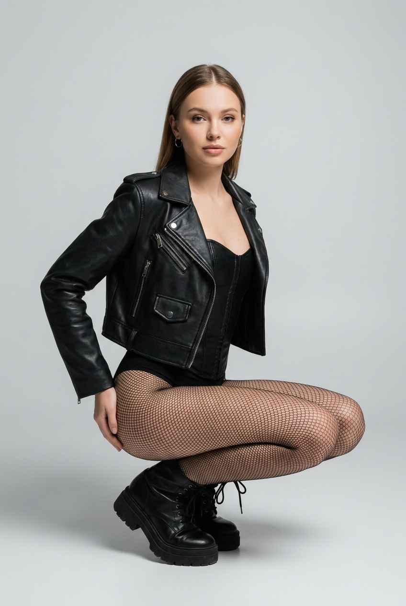
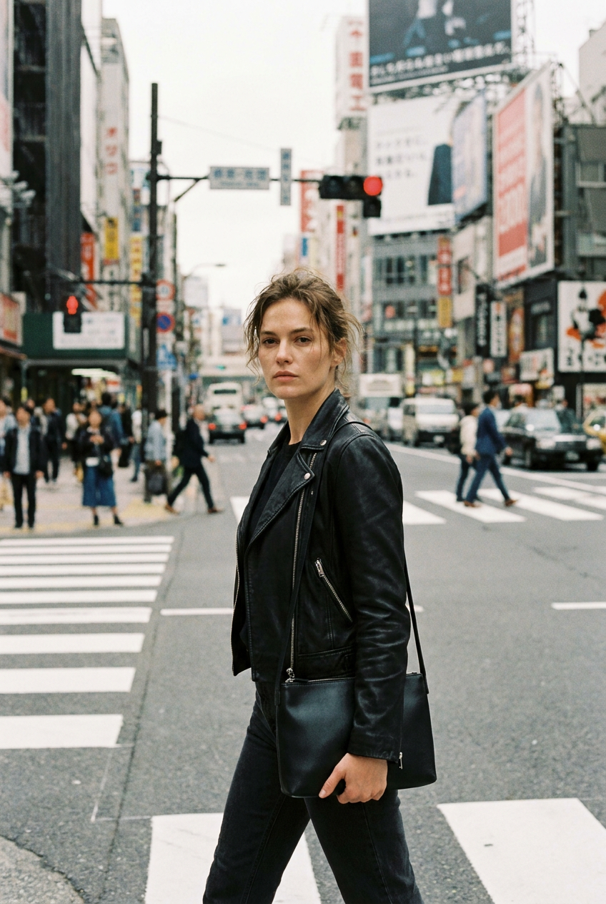
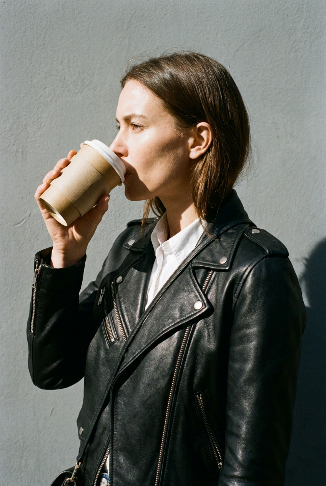
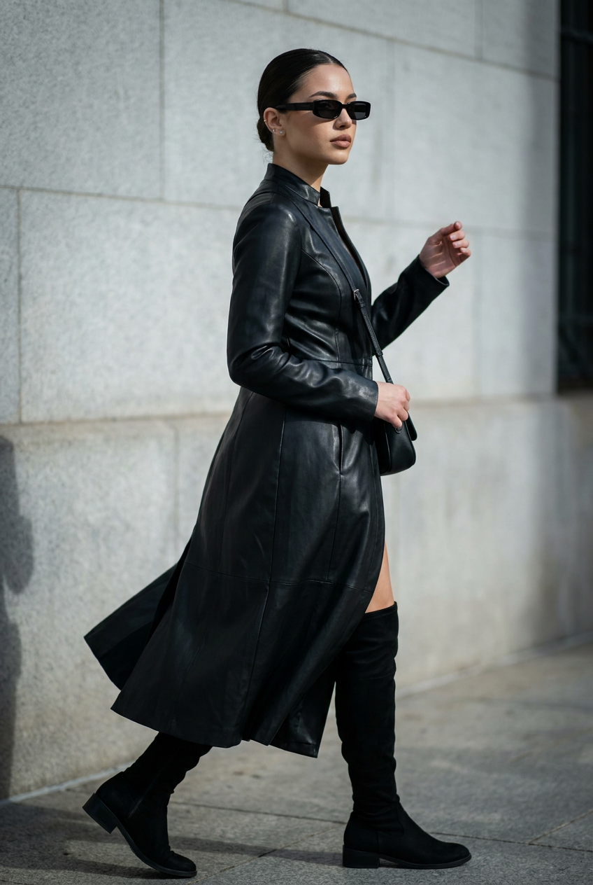
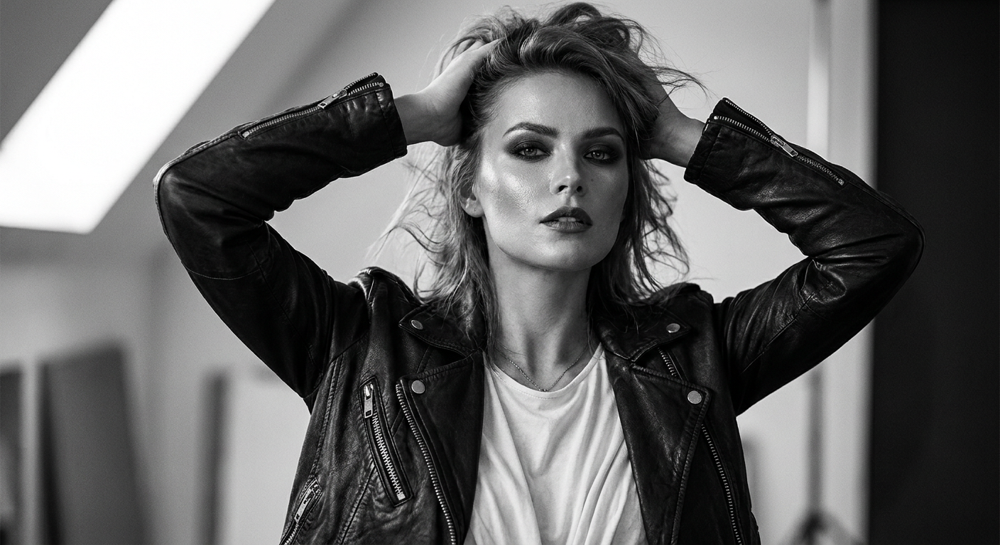
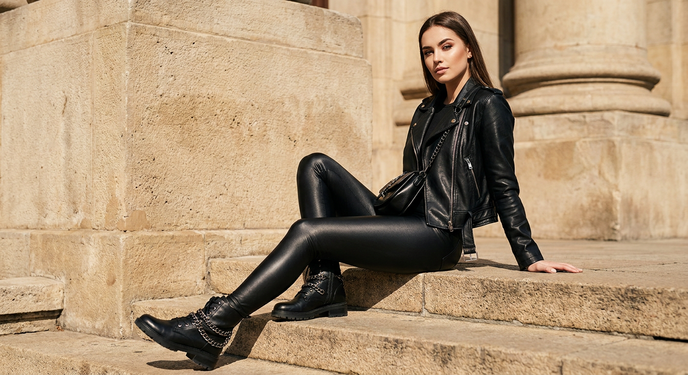
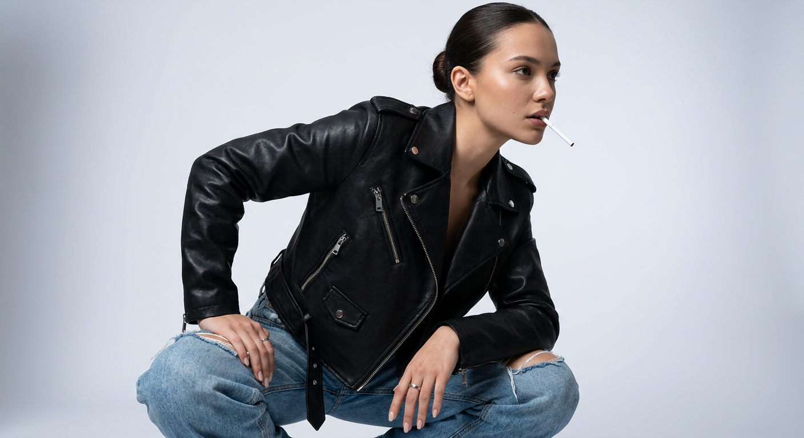
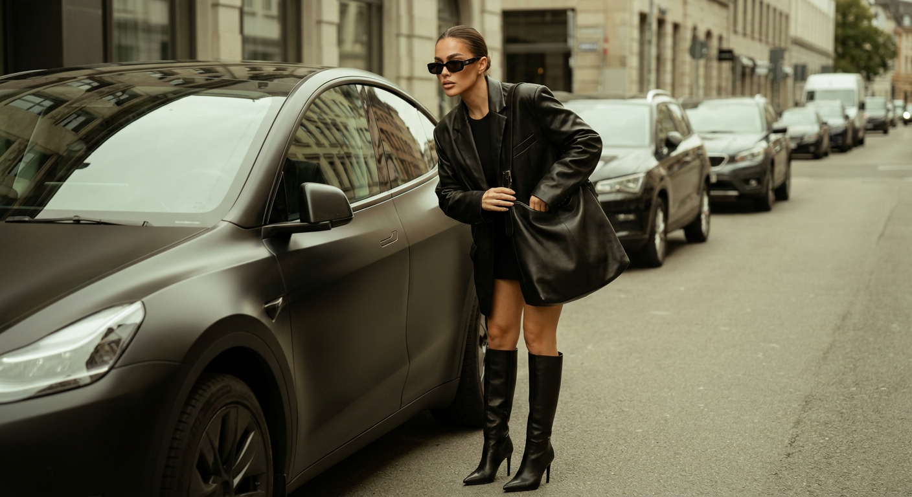
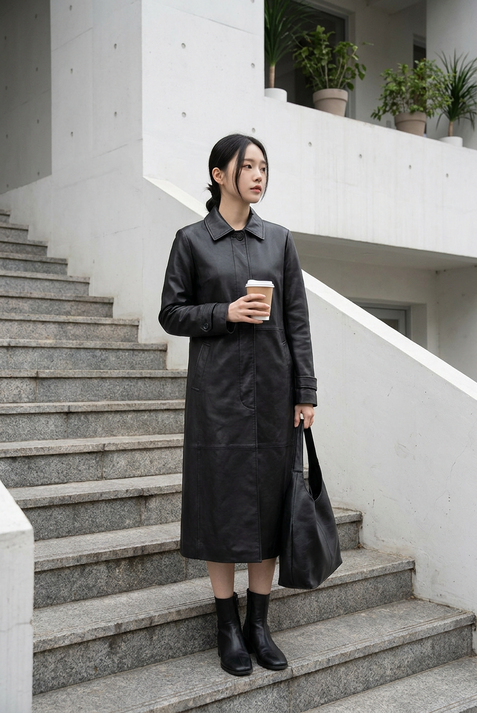
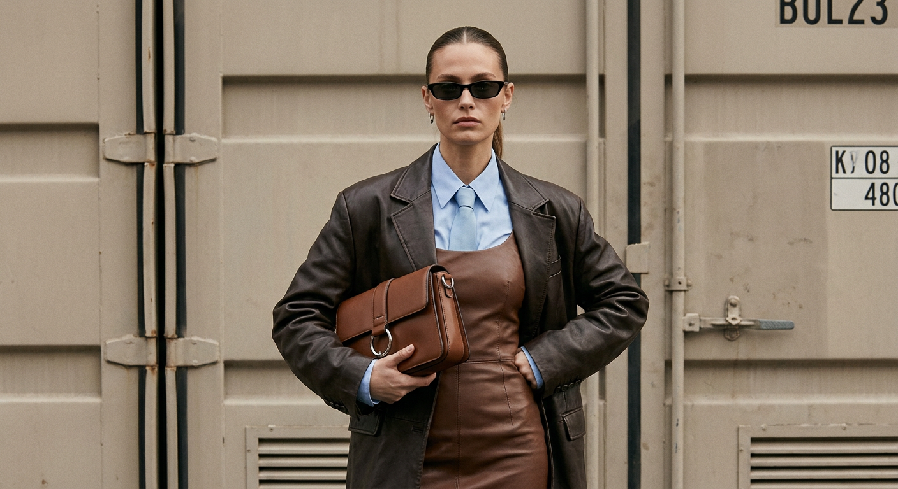

ИИ-фото в кожаной одежде: 10 промптов для нейросети

Кожаная одежда эффектно выглядит в кадре, но её сложно правдоподобно снять: материал начинает напоминать пластик, фурнитура теряется, а поза выглядит деревянной. Генерация помогает быстро проверить разные образы, ракурсы и локации без аренды студии и сложного подбора одежды.
В подборке — десять готовых промптов для нейросети: от студийного biker-образа и чёрно-белого портрета до съёмки у электромобиля, на лестнице и у индустриальной стены. В каждом сценарии заданы одежда, поза, настроение, свет и композиция.
Как сгенерировать такое фото: пошагово
Нужен снимок анфас при ровном свете, лицо в кадре целиком, без тёмных очков и головных уборов. Разрешение от 1000 пикселей по короткой стороне. Чем чётче исходник, тем точнее модель повторит черты.
Выберите сценарий ниже и нажмите «Копировать» — текст уйдёт в буфер целиком, вместе с командой сохранения внешности. Эта команда стоит первой строкой и отвечает за то, чтобы на выходе было ваше лицо, а не случайное.
Кнопка «Сгенерировать» рядом с каждым промптом открывает модель в новой вкладке. Nano Banana Pro работает с референсом лица — в отличие от моделей, которые генерируют портрет с нуля и узнаваемость теряют.
Промпт — в поле ввода, портрет — через загрузку референса. Порядок значения не имеет, но без референса команда сохранения внешности работать не будет: модели нечего сохранять.
Для сторис и ленты берите 9:16, для превью и обложек — 4:3. Первый результат редко идеален: если поза или свет ушли не туда, поправьте соответствующую часть промпта и запустите заново. Обычно хватает двух-трёх итераций.
10 промптов для генерации
1. Студийный biker-образ
Строго сохранить внешность по загруженному референсу: черты лица, пропорции, мимику и текстуру кожи без изменений. Фотореалистичная студийная fashion-съёмка, вертикальный кадр, объектив 85 мм, f/4, мягкий направленный свет с лёгким контровым акцентом. В центре — молодая женщина в позе 3/4: она сидит на корточках, корпус развёрнут к камере, голова чуть наклонена и повернута, взгляд уходит немного в сторону. Выражение спокойное и уверенное. Использовать лицо с загруженного референса, точно сохранив форму глаз, бровей, носа, губ, овал, пропорции и естественную мимику. Центральный пробор, гладкие волосы, небольшие серьги-кольца. На ней укороченная чёрная куртка из гладкой натуральной кожи в стиле biker: объёмный воротник, центральная металлическая молния, декоративные швы и накладки, прорезные карманы с заклёпками или кнопками. Под курткой — лаконичный чёрный корсетный топ или боди с тонкими ремнями и шнуровкой спереди. На ногах чёрные чулки в крупную сетку. Реалистичная фактура кожи, аккуратная фурнитура, резкость на лице и одежде, разрешение 4K.
2. Перекрёсток в стиле плёнки

Строго сохранить внешность по загруженному референсу: черты лица, пропорции, мимику и текстуру кожи без изменений. Уличная fashion-фотография в духе винтажной аналоговой плёнки, киношный candid street style, вертикальная композиция, объектив 50 мм, f/2.8, камера на уровне глаз. Молодая женщина идёт через городской перекрёсток, занимает центр или немного ниже центра кадра; вокруг — здания, светофоры, дорожная разметка и размытый поток мегаполиса. Она делает шаг вперёд, корпус слегка наклонён, одна рука свободно опущена вдоль бедра, вторая поднята или удерживает сумку, частично попадающую в кадр. Взгляд прямо в объектив, лицо нейтральное, уверенное, немного серьёзное. Черты лица взять с загруженного референса без изменения формы глаз, носа, губ, бровей и овала. Естественный макияж, матовые или полуматовые губы, реалистичная текстура кожи. Волосы слегка растрёпаны движением и лежат на плечах. Чёрная кожаная куртка с заметной фактурой, тёмный городской образ, мягкое дневное освещение, зерно плёнки, лёгкая цветовая выцветшесть, естественный motion blur на фоне.
3. Кофе и байкерская куртка

Строго сохранить внешность по загруженному референсу: черты лица, пропорции, мимику и текстуру кожи без изменений. Фотореалистичный уличный fashion-кадр, крупный план по грудь, ракурс 3/4 с переходом в левый профиль, объектив 85 мм, f/2, мягкий рассеянный дневной свет. Молодая женщина стоит боком к камере и пьёт кофе из бумажного стакана: стакан касается губ, она делает глоток, взгляд направлен на напиток или в пространство перед собой. Плечи расслаблены, в кадре видны лицо в профиль, шея, верхняя часть тела и обе руки. Волосы гладко уложены, отдельные пряди аккуратно лежат на плечах. Макияж минимальный, тон кожи ровный, брови выразительные; черты лица, пропорции и естественную мимику точно повторить по загруженному референсу. На модели чёрная кожаная байкерская куртка с диагональной молнией, карманами на груди и у талии, металлическими заклёпками и кнопками, рельефными швами. Натуральная кожа должна выглядеть матовой и плотной, без пластикового блеска. Фон городской, слегка размытый, внимание на профиле, руках, стакане и фурнитуре.
4. Total black у стены

Строго сохранить внешность по загруженному референсу: черты лица, пропорции, мимику и текстуру кожи без изменений. Фотореалистичная street-fashion фотография с low-key cinematic look, вертикальный кадр, объектив 50 мм, f/2.8, глубокие тени и узкий боковой источник света. Молодая женщина показана в профиль или в 3/4, смотрит вправо и идёт либо остановилась в движении у стены. Корпус немного подан вперёд, одна рука согнута и слегка поднята, второй рукой она держит сумку; осанка уверенная, ноги поставлены в естественный шаг, чтобы читалась динамика кроя. Лицо с загруженного референса сохранить без изменения индивидуальных черт. Волосы убрать назад в гладкий хвост или аккуратную укладку, добавить маленькие серьги-гвоздики. На лице узкие тёмные прямоугольные солнцезащитные очки без логотипов. Образ total black: приталенное платье или платье-пальто из чёрной кожи либо экокожи, подчёркнутая талия, чистые линии силуэта, минимум декора. Тёмная сумка, реалистичные складки и блики материала, индустриальная или бетонная стена, кинематографичный контраст, без лишних надписей в фоне.
5. Чёрно-белый портрет

Строго сохранить внешность по загруженному референсу: черты лица, пропорции, мимику и текстуру кожи без изменений. Чёрно-белая студийная fashion-фотография, фотореалистичный портрет до пояса, объектив 85 мм, f/4, камера на уровне лица или немного ниже. Молодая женщина смотрит прямо в объектив, голова слегка повернута вправо, выражение уверенное и чуть задумчивое. Обе руки подняты над головой: модель держит или приподнимает растрёпанные волосы, один локоть выше другого, пальцы естественно согнуты, без лишних пальцев и деформаций. Лицо взять с загруженного референса, точно сохранить форму глаз, бровей, носа, губ, овал и мимику. Объёмная укладка выглядит слегка взъерошенной, отдельные пряди разлетаются, будто от лёгкого ветра. Макияж выразительный: smoky eyes, чёткие брови, длинные ресницы, контур глаз, глубокая тёмная или винная помада, в монохроме она выглядит почти чёрной; на губах лёгкий блеск. На модели чёрная кожаная куртка с мягкими складками и заметной фактурой. Жёсткий студийный свет, глубокие тени, чистый серый фон, высокий микроконтраст, плёночная зернистость.
6. Кожа на каменной лестнице

Строго сохранить внешность по загруженному референсу: черты лица, пропорции, мимику и текстуру кожи без изменений. Фотореалистичная уличная fashion-съёмка в солнечный день, editorial mood, вертикальный кадр, объектив 35 мм, f/4, камера расположена низко и сбоку. Молодая женщина сидит на каменной лестнице перед массивной стеной или колоннами из бежево-песочного камня. Поза боковая, лёгкий 3/4: корпус развёрнут к камере, одна нога вытянута вперёд по ступени, вторая согнута, колено ближе к объективу. Одна рука опирается на ступень или колено, другая расслаблена у бедра. Взгляд направлен в объектив или чуть мимо, выражение спокойное и уверенное. Черты лица точно повторить по загруженному референсу. Волосы с объёмом у корней, мягкие пряди обрамляют лицо, макияж аккуратный и естественный. На модели чёрная кожаная куртка или короткий кожаный жакет, тёмный топ и чёрные брюки либо юбка; материал должен показывать натуральные складки и матовые блики. Солнечные тени от архитектуры, тёплая каменная палитра, резкость на модели, мягкое размытие дальнего фона.
7. Поза с сигаретой

Строго сохранить внешность по загруженному референсу: черты лица, пропорции, мимику и текстуру кожи без изменений. Фотореалистичная студийная fashion-съёмка, близкий вертикальный ракурс, камера немного ниже уровня глаз, объектив 50 мм, f/2.8. Молодая женщина сидит или полусидит на корточках, опираясь руками на колени; корпус наклонён вперёд, голова повернута вправо, взгляд уходит в сторону. Выражение лица спокойное, уверенное, слегка задумчивое. Лицо использовать с загруженного референса, сохранив индивидуальные пропорции и естественную мимику. Волосы собраны назад в гладкую укладку, брови ровные, макияж глаз выразительный — стрелки и тушь, кожа с реалистичной текстурой. На пальце заметно аккуратное кольцо, серьги минималистичные, маникюр нейтрального оттенка. Во рту белая сигарета, тонкая струйка дыма поднимается вверх; без романтизации курения и без читаемых брендов. На модели чёрная кожаная куртка с металлической фурнитурой, рельефными швами и плотным воротником. Студийный серо-чёрный фон, мягкий верхний свет, детальная кожа и ткань, без деформации рук.
8. У электромобиля в городе

Строго сохранить внешность по загруженному референсу: черты лица, пропорции, мимику и текстуру кожи без изменений. Люксовая уличная fashion-фотография, полный рост, вертикальный кадр, объектив 35 мм, f/4, камера немного сбоку на уровне талии, эффект случайного candid-снимка. Женщина стоит рядом с матово-чёрным современным электромобилем на городской улице; автомобиль занимает большую часть фона, его глянцевые поверхности отражают здания и свет. Модель слегка наклонена вперёд и поправляет большую чёрную кожаную сумку через плечо или за ручку. Поза расслабленная: одна нога согнута в колене, другая выпрямлена. Настроение уверенное, уличное, с лёгкой папарацци-энергией. На ней объёмный чёрный кожаный пиджак со спущенной линией плеч, под ним короткий минималистичный образ — мини-платье или топ с шортами. Добавить высокие чёрные кожаные сапоги, крупную сумку и сдержанные аксессуары. Лицо и естественную мимику повторить по загруженному референсу. Дневной городской свет, реалистичные отражения на кузове, натуральные складки кожи, без логотипов и номеров автомобиля.
9. Макси-пальто на ступенях

Строго сохранить внешность по загруженному референсу: черты лица, пропорции, мимику и текстуру кожи без изменений. Фотореалистичная уличная fashion-съёмка в стиле европейского минимализма, дневной рассеянный свет, вертикальный кадр, камера на уровне талии или роста, объектив 50 мм, f/4. Молодая женщина стоит на каменных ступенях у белого современного здания. Она развёрнута боком или в 3/4, корпус слегка отвёрнут от камеры, голова направлена в сторону, выражение нейтральное и спокойное. Одна нога стоит на нижней ступени, другая — на следующей, образуя диагональ силуэта. Волосы гладко уложены, мягкие пряди лежат у лица; макияж аккуратный: ровный тон, подчёркнутые брови, нюдовые или матовые губы. Лицо точно передать по загруженному референсу, без изменения пропорций и ключевых черт. На модели длинное чёрное кожаное пальто до середины голени, слегка свободного силуэта, с чистой линией плеч, закрытой застёжкой и естественными вертикальными складками. Под ним — минималистичный тёмный наряд и обувь в тон. Белая архитектура, мягкие серые тени, сдержанная палитра, резкая фактура кожи.
10. Коричневая кожа и галстук

Строго сохранить внешность по загруженному референсу: черты лица, пропорции, мимику и текстуру кожи без изменений. Ультрадетализированный street-fashion editorial-портрет, средний план от талии, прямое кадрирование, слегка приближенная перспектива, объектив 85 мм, f/3.2. Женщина стоит перед индустриальной металлической поверхностью, одна рука лежит на бедре, другая прижимает к корпусу структурированную кожаную сумку. Плечи расправлены, осанка доминантная и уверенная; взгляд направлен мимо камеры, выражение нейтральное, серьёзное, отстранённое. Лицо и естественную мимику повторить по загруженному референсу, сохранив форму глаз, носа, губ, бровей и овала. На модели объёмная тёмно-коричневая кожаная куртка с широкими лацканами и спущенной линией плеч. Под ней — облегающее платье из коричневой кожи, создающее контраст между объёмным верхом и чётким силуэтом. Из-под платья видна светло-голубая рубашка на пуговицах, сверху аккуратно завязан пастельно-голубой галстук с masculine-акцентом. Добавить структурированную сумку, минимум украшений, реалистичные швы и блики кожи. Холодный индустриальный свет, высокая детализация, 4K, без текста и логотипов.
Что важно учесть в этом стиле
Кожа должна выглядеть плотной и материальной: просите видимые складки на сгибах локтей, мягкие блики по рельефу и различие между матовой натуральной кожей и глянцевой фурнитурой. Если написать просто «кожаная одежда», нейросеть часто выдаёт пластиковую поверхность.
Поза не менее важна, чем гардероб. Указывайте положение рук, вес тела, направление головы и точку взгляда. Для fashion-кадра полезно отдельно задать фокусное расстояние: 35 мм покажет окружение, 50 мм даст естественную перспективу, 85 мм соберёт портрет без заметных искажений.
Идеи для вариаций
- Замените чёрную кожу на бордовую, графитовую или тёмно-зелёную, сохранив крой.
- Перенесите съёмку из города в ночной гараж, стеклянный вестибюль или пустой кинотеатр.
- Добавьте мокрый асфальт, отражения витрин и холодный свет после дождя.
- Сделайте серию в разных форматах: 4:5 для ленты, 9:16 для сторис, 3:2 для обложки.
- Попросите нейросеть заменить сумку на папку, перчатки или металлический клатч.
Как собрать свой промпт
Сначала задайте тип съёмки, план и объектив. Затем опишите модель: позу, положение рук, направление взгляда и эмоцию. После этого перечислите одежду от верхнего слоя к деталям — материал, цвет, крой, застёжки, карманы и аксессуары.
В конце добавьте локацию, свет, фон, фактуру кожи и технические параметры. Для работы с референсом отдельно укажите, что нужно сохранить индивидуальные черты лица. Если результат близкий, меняйте за один раз только один параметр и делайте 4–8 вариантов, а не переписывайте весь запрос.
Ошибки, из-за которых кадр не получается
- Слишком общий запрос. Фраза «девушка в кожаной куртке» не задаёт ни силуэт, ни фурнитуру, ни характер материала.
- Несовместимые ракурсы. Не стоит одновременно просить крупный портрет, полный рост и видимый архитектурный фон.
- Перегруженная стилистика. Сочетание плёнки, HDR, глянцевой рекламы и low-key часто даёт грязный свет.
- Неуказанные руки. Для сложных поз прописывайте, где находится каждый локоть, кисть и палец.
- Отсутствие запретов. Добавляйте «без логотипов, лишних пальцев, текста, пластикового блеска и деформированной фурнитуры».
Частые вопросы
Как сделать такое ИИ-фото бесплатно?
Попробуйте Kandinsky и Шедеврум: они подходят для текстовой генерации, но точность лица по референсу и стабильность одежды могут быть ограничены. В Krea AI и Arena.ai обычно удобнее тестировать разные модели и референсы, однако доступность функций, лимиты и качество меняются. Для точного сходства делайте несколько вариантов, используйте один понятный референс и не перегружайте промпт.
Как сохранить лицо с фотографии?
Загрузите чёткий портрет без сильных теней, очков и перекрывающих лицо волос. В промпте уточните, какие черты нужно сохранить, а позу и одежду описывайте отдельно. При сильной смене ракурса сходство всё равно может снизиться.
Почему кожаная одежда выглядит как латекс?
Добавьте слова «матовая натуральная кожа», «видимые поры и зерно материала», «естественные складки на сгибах» и «умеренные отражения». Не смешивайте в одном запросе глянцевый винил, лакированную кожу и матовую фактуру.
Как получить серию кадров в одном стиле?
Зафиксируйте референс, цветовую палитру, модель камеры, объектив и описание внешности. Меняйте только сцену или позу. Сохраните удачный seed, если выбранный генератор поддерживает эту настройку, и проверяйте результат сериями по 4–8 изображений.